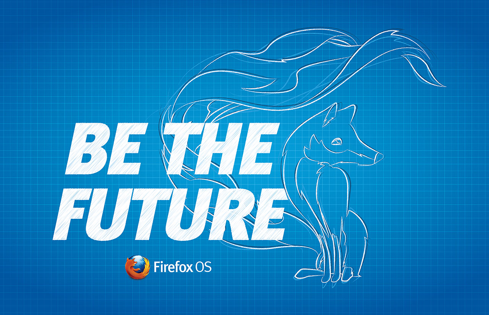
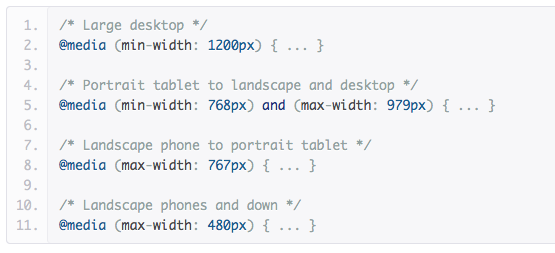
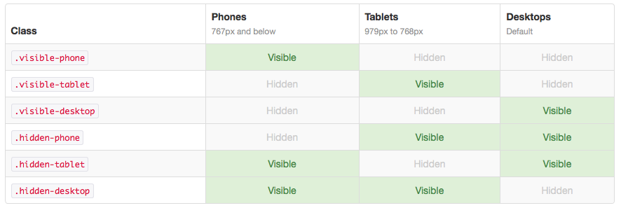
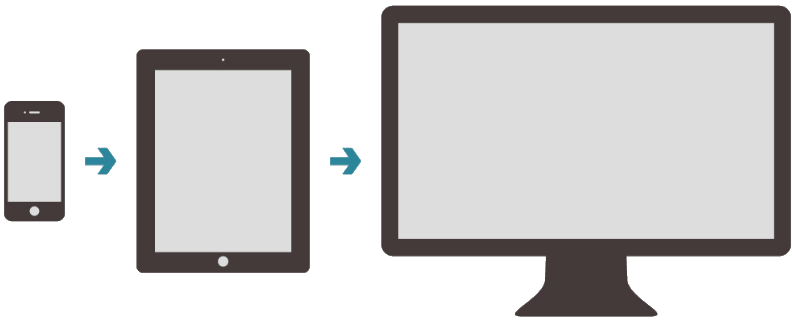
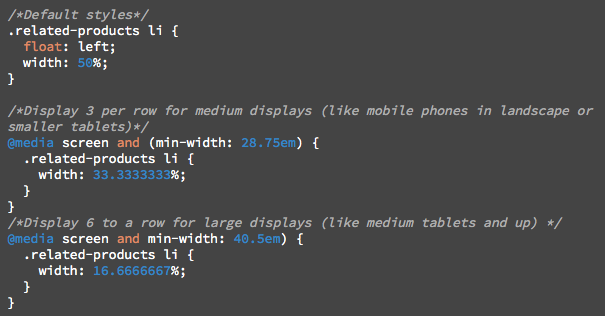
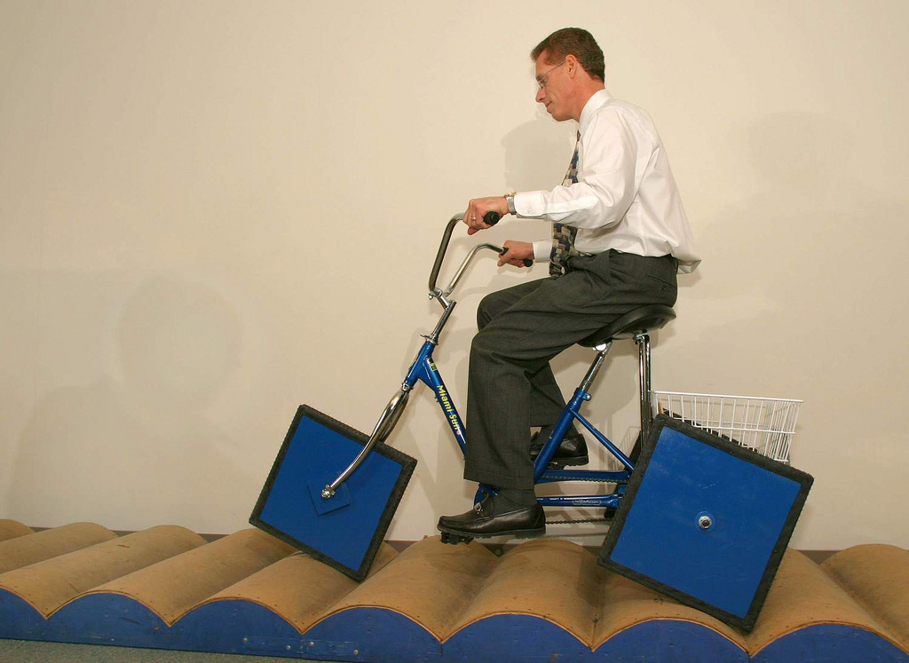
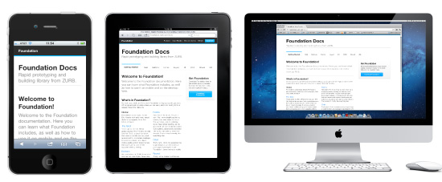
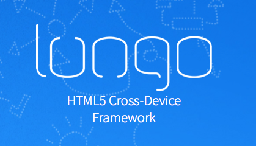
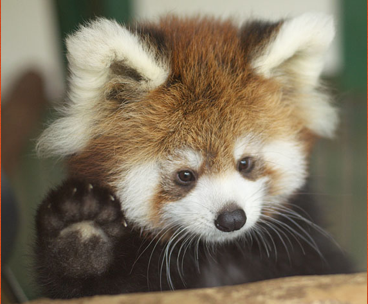

Responsive Design y herramientas Dev
Fernando Agüero,
@fjaguero
Firefox OS App Day - 01/06/13 - Valencia, España

Firefox OS App Day - 01/06/13 - Valencia, España
Media Queries

Utility Classes

Más velocidad de desarrollo
Mobile First

Mobile First

Herramientas de testing
One step forward
Elemento Picture: Optimización de cargas de imágenes. Picturefill
Flexbox: Flexible layout
Rem: Adaptive Typography
Native inputs
Y mucho más cada día
No reinventes la rueda

Prototipando con Frameworks

Bootstrap, Foundation, Lungo, entre muchos otros
¡NO SDK!

Prueba de app simple con Lungo + Angular + Mongo
Gracias

Fernando Agüero
@fjaguero